流程② 执行
CO02 下达 · MB1A 发料 261 · CO11N 工单确认 · MIGO 收货 101 · 技术性完成
执行篇回答「车间怎么把订单干出来」：下达（CO02）→ 发料（MB1A）→ 工单确认/报工（CO11N）→ 产成品收货（MIGO）→ 技术性完成（CO02）。教材 PP 任务 38、40、42–45、47 是这一篇的现场。
教学场景
教材任务 42 的原话：和内部订单类似，生产订单也采用状态管理，前面创建的生产订单还不能执行，只有把它下达后它才能被执行。
下达会做三件事：① 状态从「创建」变为「下达」（画面上的绿旗与状态行）；② 释放 BOM 组件的预留；③ 允许发料、报工、收货。
教材把「对采购订单收货（任务 40）」也放在这一篇里 —— 因为那是原材料的到货，发料的前提就是把料先收进来。
手顺① 显示生产订单清单（COOIS）
显示生产订单清单
COOIS解释：这一步我们到信息系统中去查看颐宁公司新的生产订单的清单。前台
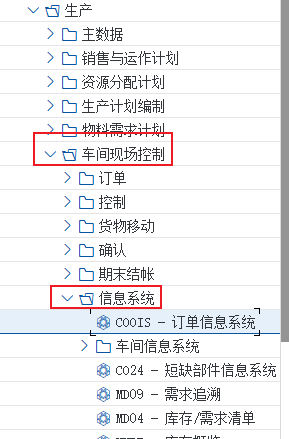
画面 1教材《S4.docx》· PP 任务 38 显示生产订单清单 · 原图 01_1_image1008.png 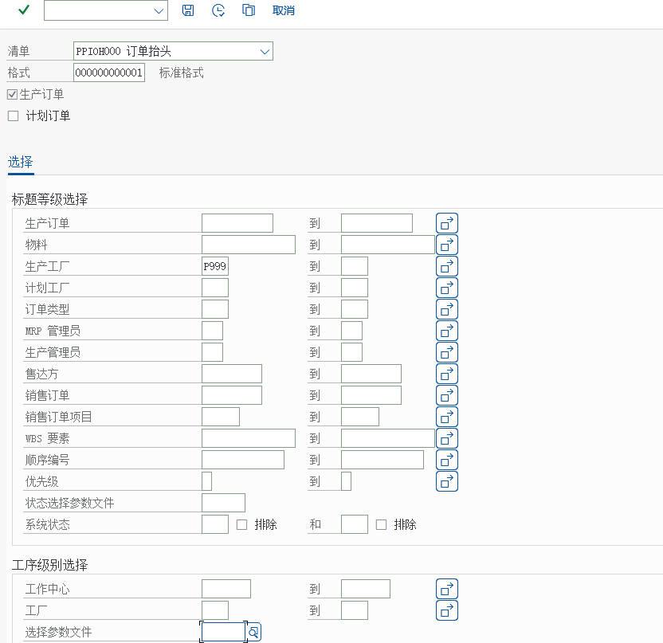
画面 2教材《S4.docx》· PP 任务 38 显示生产订单清单 · 原图 02_1_image1009.png 
画面 3教材《S4.docx》· PP 任务 38 显示生产订单清单 · 原图 02_2_image1010.png 说明解释：在这里我们看到了生产订单的清单。清单中是生产订单最主要的一些信息。这个清单并不是一个报表，从这个清单我们可以进行很多操作，比如更改生产订单、显示订单、打印生产订单等等。
{kind=link}
{kind=link}
| COOIS 能做什么 | 说明 | 教材演示 |
|---|---|---|
| 选择订单范围 | 按工厂、订单类型、物料、状态、日期筛选 | 看颐宁公司新产生的生产订单清单 |
| 清单操作 | 双击进入 CO02/CO03；也能直接打印、批量下达 | 教材原话：从这个清单可以进行很多操作 |
| 常用输出 | 订单抬头、物料、数量、状态、开始/结束日期 | 任务 38 的清单画面 |
手顺② 下达生产订单（CO02）
下达生产订单
CO02CO02 打开生产订单，先在「收货」页把「收货」的勾勾上（教材提示），再点上方状态看当前状态，最后点绿色旗帜下达；下方出现「下达已执行」提示后保存。同样的方法下达其他生产订单。后勤－生产－生产控制－订单－CO02-更改
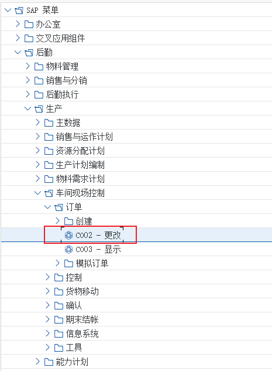
画面 4教材《S4.docx》· PP 任务 42 下达生产订单 · 原图 01_1_image1033.png 解释：和内部订单类似生产订单也是采用 “ 状态管理” 的，前面创建的生产订单还不能执行，只有在我们将它下达后，它才能被执行
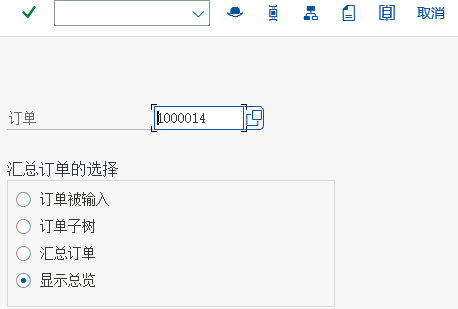
画面 5教材《S4.docx》· PP 任务 42 下达生产订单 · 原图 02_1_image1034.png 
画面 6教材《S4.docx》· PP 任务 42 下达生产订单 · 原图 03_1_image1035.png 原书提示在收货页，要把收货勾上勾点击屏幕上方的状态，行显示了这张生产订单目前的状态，可以点击旁边的 i 按钮查看其状态 点击绿色旗帜下达生产订单，屏幕下方出现提示，下达已执行，点击保存，使用同样的方法下达其他生产订单

画面 7教材《S4.docx》· PP 任务 42 下达生产订单 · 原图 04_1_image1036.png 
画面 8教材《S4.docx》· PP 任务 42 下达生产订单 · 原图 04_2_image1037.png 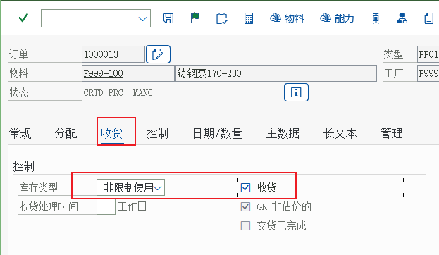
画面 9教材《S4.docx》· PP 任务 42 下达生产订单 · 原图 05_1_image1038.png
{kind=link}
{kind=link}
{kind=link}
| 订单抬头页签 | 看什么 | 教材演示 |
|---|---|---|
| 订单抬头 / 状态 | 订单号、物料、数量、状态行（创建 / 下达 / 技术性完成 / 关闭） | 点状态旁的「i」按钮查看状态含义 |
| 收货 Receipt | 是否允许对订单收货（勾选框） | 教材提示：在收货页要把收货勾上 |
| 分配 / 控制 | 订单类型、工厂、调度员、成本收集器 | 订单类型 PP01 |
| 组件概览 | BOM 组件与预留（下达后释放） | 发料时组件会自动带出（任务 43） |
| 工序概览 | 工艺路线带来的工序与工作中心 | 报工时按工序逐条确认（任务 44） |
| 成本 / 结算规则 | 订单成本与结算接收方 | 任务 46 看成本；结算规则在任务 48 会暴露问题 |
手顺③ 对生产订单发货（MB1A，移动类型 261）
对生产订单发货
MB1A 移动类型 261（对生产订单发货）：点「到订单」输入生产订单号与工厂 → 系统自动把订单中尚未发货的组件复制过来 → 保存。发完在「发货菜单 → 显示」里回看，双击会计凭证能看到这次发料牵动的会计凭证。解释：产成品铸钢泵 170-230 的生产订单下达后就可以开始生产订单的执行，本步骤我们给生产订单发原材料。
后勤－物料管理－库存管理－货物移动－MB1A-发货
画面 10教材《S4.docx》· PP 任务 43 对生产订单发货 · 原图 01_1_image1039.png 回车

画面 11教材《S4.docx》· PP 任务 43 对生产订单发货 · 原图 02_1_image1040.png 点击到订单，输入生产订单号及工厂
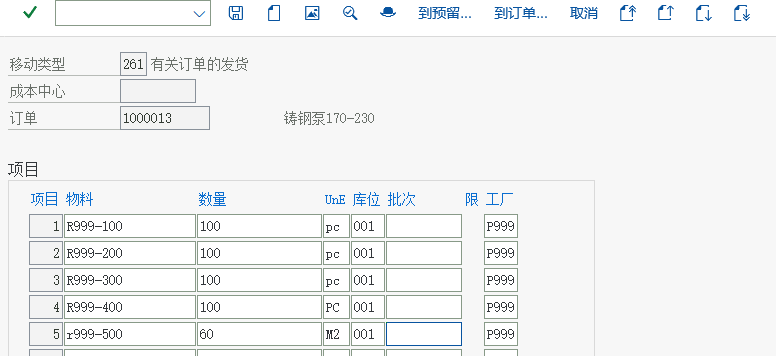
画面 12教材《S4.docx》· PP 任务 43 对生产订单发货 · 原图 03_1_image1041.png 系统自动将订单中尚未发货的物料复制过来，点击保存

画面 13教材《S4.docx》· PP 任务 43 对生产订单发货 · 原图 04_1_image1042.png 点击发货菜单---显示
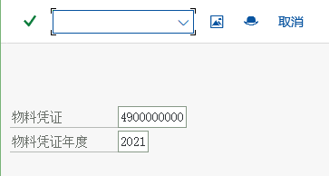
画面 14教材《S4.docx》· PP 任务 43 对生产订单发货 · 原图 05_1_image1043.png 回车后看到
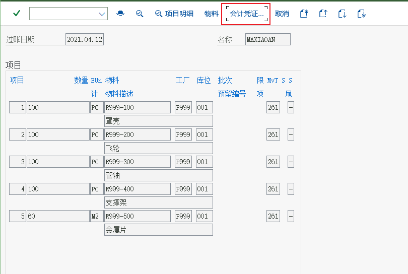
画面 15教材《S4.docx》· PP 任务 43 对生产订单发货 · 原图 06_1_image1044.png 原书提示点击会计凭证
画面 16教材《S4.docx》· PP 任务 43 对生产订单发货 · 原图 07_1_image1045.png 双击会计凭证，如下

画面 17教材《S4.docx》· PP 任务 43 对生产订单发货 · 原图 08_1_image1046.png 原书提示退回，重复同样的办法，对其余已经下达的生产订单发货
{kind=link}
{kind=link}
{kind=link}
| 要点 | 说明 | 教材画面/提示 |
|---|---|---|
| 移动类型 | 261 = 对生产订单发货（领料） | 发货时选 261 |
| 到订单 To Order | 必须指定生产订单号与工厂 | 任务 43 步骤 03 |
| 自动带出组件 | 系统按订单预留把未发货的组件复制过来 | 步骤 04 原书说明 |
| 会计凭证 | 发料生成会计凭证（借 生产成本-原材料消耗 / 贷 存货） | 步骤 08：双击会计凭证 |
| 重复动作 | 对其余已下达的订单重复发料 | 原书提示：重复同样的办法 |
手顺④ 工单确认（CO11N）
工单确认
CO11NCO11N 按工序逐个确认（报工/计工单）：输入订单与工序 → 回车带出计划值 → 填实际产量与工时 → 「货物移动」页决定是否倒冲组件 → 保存。教材共对工序 10、20、30、40、50 以及并行的「油漆罩壳」逐一报工。解释：本步骤是生产订单的执行过程，对于已经完成的各道工序进行逐个的确认和报工，我们称之为工票确认或计工单。

画面 18教材《S4.docx》· PP 任务 44 工单确认 · 原图 01_1_image1047.png 按回车

画面 19教材《S4.docx》· PP 任务 44 工单确认 · 原图 02_1_image1048.png 点击货物移动
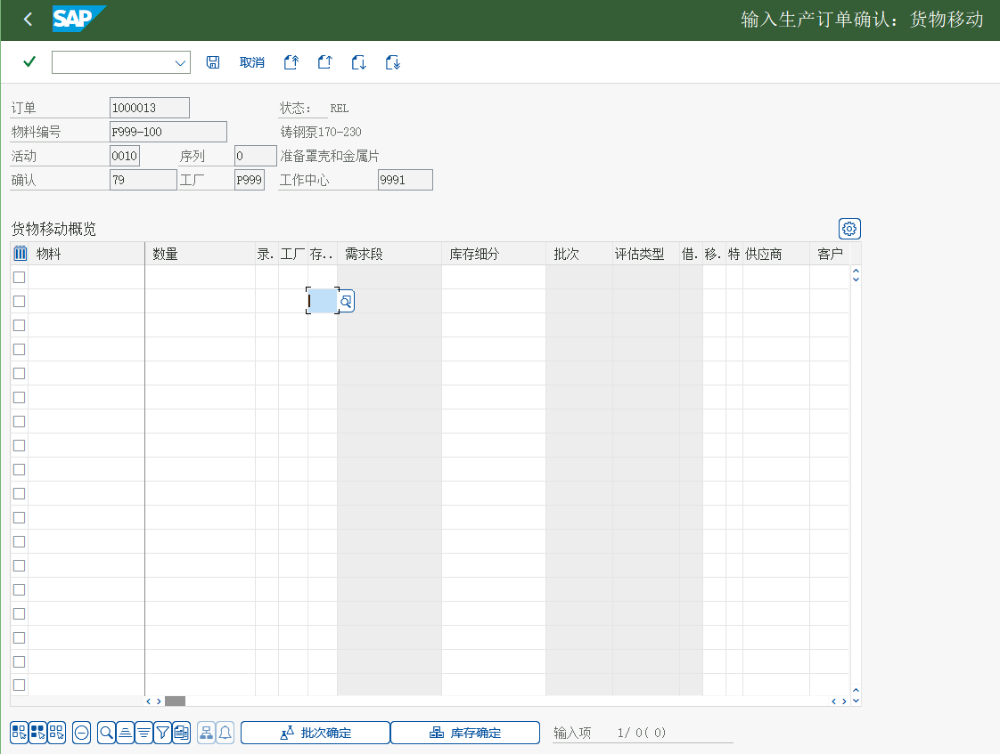
画面 20教材《S4.docx》· PP 任务 44 工单确认 · 原图 03_1_image1049.png 点击回车后，如下所示

画面 21教材《S4.docx》· PP 任务 44 工单确认 · 原图 04_1_image1050.png 
画面 22教材《S4.docx》· PP 任务 44 工单确认 · 原图 04_2_image1051.png 这里我们看到产成品尚未完工收获，点击保存按钮，继续对其他工序进行确认，这次我们选择并行的工序，油漆罩壳
点击货物移动，单击保存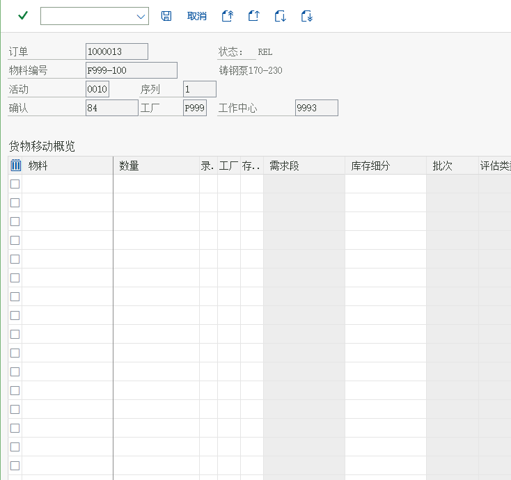
画面 23教材《S4.docx》· PP 任务 44 工单确认 · 原图 05_1_image1052.png 原书提示重复上述办法，对工序 20、30、40 和 50 进行报工。产成品 F999-100 共有六道工序，分别为 10、20、30、40、50 出对工序已经改动了计划人工工时外，其余都保留系统自动带出的计划值。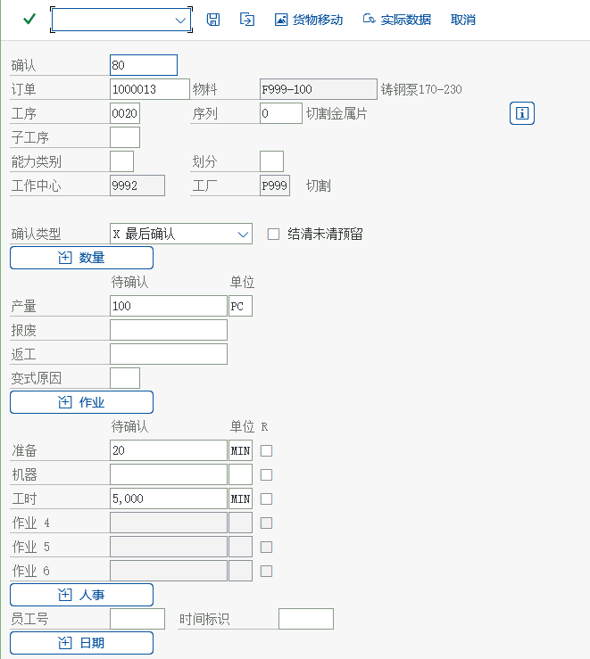
画面 24教材《S4.docx》· PP 任务 44 工单确认 · 原图 06_1_image1053.png 
画面 25教材《S4.docx》· PP 任务 44 工单确认 · 原图 07_1_image1054.png 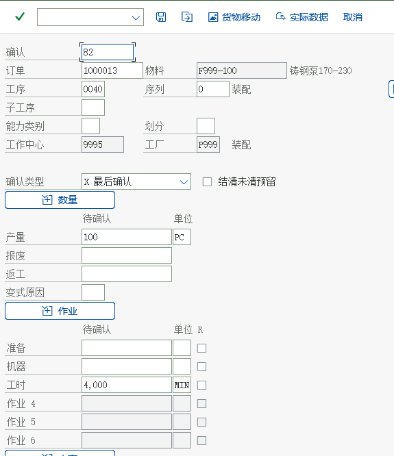
画面 26教材《S4.docx》· PP 任务 44 工单确认 · 原图 07_2_image1055.png 
画面 27教材《S4.docx》· PP 任务 44 工单确认 · 原图 08_1_image1056.png
{kind=link}
{kind=link}
{kind=link}
{kind=link}
| 确认画面要素 | 含义 | 教材做法 |
|---|---|---|
| 产量 Yield / 废品 Scrap | 这一工序完成多少、报废多少 | 按画面填写产出 |
| 实际工时 | 准备 / 机器 / 人工时间 | 教材说「对工序已经改动了计划人工工时，其余保留系统自动带出的计划值」 |
| 货物移动 Goods Movement | 确认时是否同时倒冲（Backflush）组件 | 教材在教学里逐个工序切换过来看 |
| 并行工序 | 工艺路线的并行顺序（油漆罩壳）也要单独确认 | 教材特意选了并行工序演示 |
| 保存后的凭证 | 生成确认凭证（时间票据/实际作业量） | 确认数据进入订单实际成本 |
KP26 维护，教材任务 12 就是因为这里没做完而无法继续。手顺⑤ 对生产订单收货（MIGO，移动类型 101）
对生产订单收货
MIGOMIGO 对生产订单收货入库（画面标题「订单的 GR」）。操作和采购收货类似，只是要填的是生产订单号（教材画面 1000013），并且要在订单的收货页先把收货的勾勾上。解释：产品铸钢泵 170-230 的生产经过各道工序的加工后正式完工，本步骤进行订单完工收货

画面 28教材《S4.docx》· PP 任务 45 对生产订单收货 · 原图 01_1_image1057.png 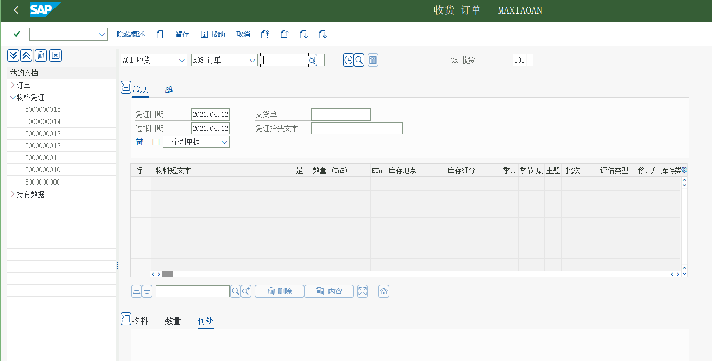
画面 29教材《S4.docx》· PP 任务 45 对生产订单收货 · 原图 02_1_image1058.png 原书提示这个屏幕和采购收货类似，只是我们只需要填写的是生产订单(1000013)的编号。（记得在订单上收货页把收货的勾勾上）
{kind=link}
| 与采购收货的差别 | 采购收货（任务 40） | 生产订单收货（任务 45） |
|---|---|---|
| 参照对象 | 采购订单（供应商） | 生产订单（自制） |
| 收货到哪 | 库存地点 0001（原材料）/ 0003（贸易商品） | 产成品的库存地点（教材画面按订单默认） |
| 会计含义 | 借存货 / 贷 GR-IR | 借产成品存货 / 贷 生产成本（订单产出，按标准价） |
| 是否产生 GR-IR | 是（要等发票校验冲平） | 否（不存在供应商发票） |
手顺⑥ 对生产订单技术性完成（CO02）
对生产订单技术性完成
CO02解释：生产订单有四种系统标准状：创建、下达、技术性完成和关闭。当生产订单和生产相关的各项操作完成后应该将生产订单作技术性完成，但是这时候我们仍然可以做诸如订单结算等特殊的操作，当所有的操作都完成后，我们才将订单关闭。
后勤－生产－生产控制－订单－CO02-更改
画面 30教材《S4.docx》· PP 任务 47 对生产订单技术性完成 · 原图 01_1_image1064.png 原书提示查看状态
画面 31教材《S4.docx》· PP 任务 47 对生产订单技术性完成 · 原图 02_1_image1065.png
| 订单状态 | 含义 | 还能做什么 |
|---|---|---|
| 创建 CRTD | 刚建好，未下达 | 只能改数据 |
下达 REL / 教材画面 I0002 | 已释放，可以执行 | 发料、报工、收货 |
| 技术性完成 TECO | 生产操作结束 | 不能再发料/收货，但可以结算（任务 48） |
| 关闭 CLSD | 所有操作完成（含结算） | 只读；要改必须先重新打开 |
状态与移动类型速记
| 移动类型 | 动作 | 库存影响 | 会计影响 |
|---|---|---|---|
261 | 对生产订单发货（领料） | 原材料 − 库存 | 借 生产成本-原材料消耗 / 贷 存货 |
262 | 261 的冲销（退回） | 原材料 + 库存 | 反向凭证 |
101（对订单） | 产成品完工入库 | 产成品 + 库存 | 贷 订单产出（按标准价） |
102 | 101 的冲销 | 产成品 − 库存 | 反向凭证 |
311（MB1B） | 库位间转储（任务 51 的移库） | 库位变动 | 不产生 FI 凭证 |
101（对采购订单） | 原材料到货 | 原材料 + 库存 | 借存货 / 贷 GR-IR（MM 侧） |
- 看状态：
CO03抬头旁的「状态」按钮或状态行上的「i」；清单里也能直接按状态筛。 - 看订单的组件与预留：
CO03→ 组件概览，可以看到每行组件的需求量、已发货量。 - 看发料/收货的凭证：
MB51（按物料+工厂拉移动清单）或MB03（单张物料凭证）。 - 任务 51 的「存货移库」用
MB1B把产成品从生产库移到销售运输库，属于同一工厂内的库位转移。
教材未演示、但项目必用的执行功能
| 功能 | 解决什么问题 | T-code |
|---|---|---|
| 取消/显示工单确认（教材未演示） | 报错了要取消确认（会冲回工时与倒冲的物料） | CO13 取消确认；CO14 显示确认 |
| 收货退货与取消（教材未演示） | 供应商多送或送错、或收货过账后要冲销 | MIGO 操作码 A02（退货）/ A03（取消） |
| 确认时自动收货（教材未演示） | 最后一道工序确认时顺带把产成品入库，减少一次操作 | CO11N 的「自动收货」选项 / 订单类型配置 |
| 批量/并行确认多个订单（教材未演示） | 车间每天有成百张订单要报工 | CO11N 的确认清单、CO15 按订单的确认总览 |
| 产能负荷与有限排程（教材未演示） | 看工作中心是否超负荷、按有限能力重排订单 | CM01 能力负荷；CM21 能力均衡（依赖任务 10/11 的能力设置） |
| 工票/领料单打印（教材未演示） | 车间要拿纸面单据干活 | 订单的输出控制（CO04 打印车间凭证） |
常见错误与排查
| 症状 | 原因 | 处理 |
|---|---|---|
| 发料时提示订单未释放 | 订单还没下达 | CO02 下达（任务 42） |
MB1A 里「到订单」取不到组件 | 订单没有预留（未下达）或组件已被发完 | 查 CO03 组件概览的「已发货数量」 |
CO11N 报「工序已确认」 | 同一工序重复确认 | 用 CO14 显示确认、CO13 取消确认 |
MIGO 对订单收货报错 | 订单收货页没勾「收货」，或订单已技术性完成 | CO02 收货页勾选；已 TECO 的要先取消 TECO |
| 报工后订单成本里没有人工费 | 作业价格（KP26）没维护，或工序控制码不含成本 | 请 CO 维护作业价格；查任务 09 的控制码设置 |
| 库存数与实物不符 | 存在未过账的发料/收货，或选错库位 | MB51 拉移动清单；MD04 看结存 |